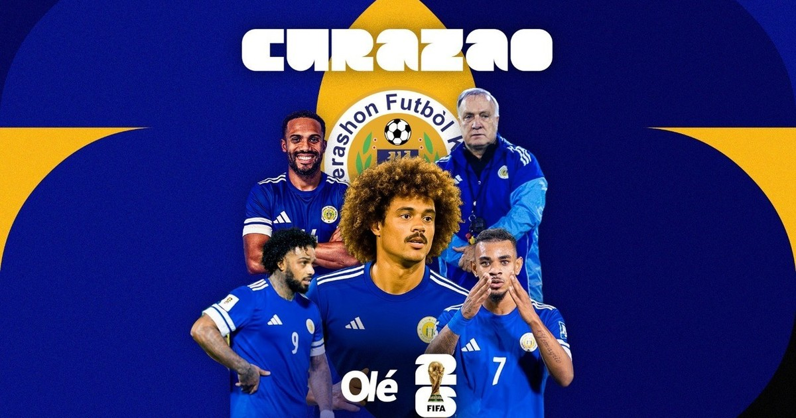
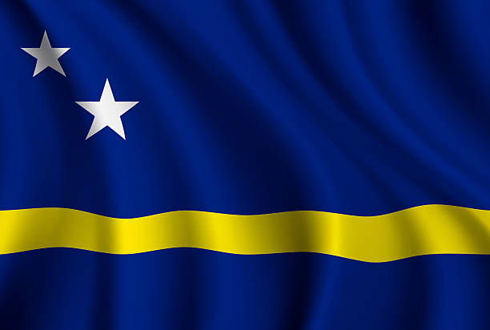

CONCACAF
Curazao

La gran sorpresa del torneo, debutante absoluto en un Mundial.
Curiosidades
- Es el país más pequeño en clasificarse a un Mundial (150.000 habitantes)
- Fue parte de las Antillas Neerlandesas hasta 2010; desde entonces compite como Curazao.
- Su selección está formada en gran parte por jugadores nacidos en Países Bajos.
- Es su primer Mundial absoluto, dirigido por Dick Advocaat.